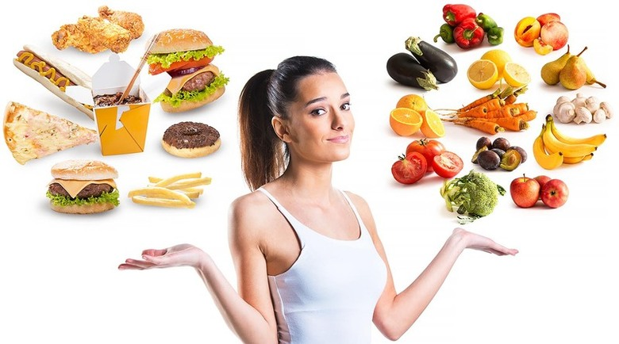

Слово "диета"зачастую вызывает в голове не особо приятные ассоциации. Это лишения, ограничения и отказ от гастрономических радостей, которые делают жизнь веселее.
Однако это всего лишь распространенное заблуждение, что диета не может быть полезной и одновременно вкусной. Отказаться нужно лишь от жареного, мучного, соленого и жирного. Остается большое количество продуктов, из которых можно готовить интересные и оригинальные блюда. И они не станут причиной лишних сантиметров на талии.
Мы собрали для вас несколько ценных практических советов, которые помогут худеть, но при этом питаться вкусно и иметь разнообразный и богатый рацион.
Давайте рассмотрим основные принципы здорового питания, которые помогут вам не только всегда оставаться стройными, но и сохранят ваше доровье.
Если вы хотите похудеть и сохранить свой результат надолго, то следует отказаться от голодных диет. К ним относятся все диеты, которые направлены на создание жесткого дефицита калорий.
Однако тут важно помнить, что организм, который поставили в жесткие условия, начинает работать в особом режиме и откладывать жир "про запас". В результате, когда человек выходит из диеты и возвращается к привычному рациону, лишние килограммы откладываются еще легче и проще.
Именно поэтому питание должно быть сбалансированным. В меню должны присутствовать в умеренных количествах все вещества: и белки, и жиры, и углеводы. Вместо простых углеводов выбирайте сложные, а трансжиры и вовсе исключите в пользу растительных и животных.
Все диетологи единогласно заверят вас, что завтрак — это самый важный прием пищи, который нельзя пропускать. И причин им не верить нет. Организм пробуждается и очень важно зарядить его правильной энергией и бодростью на весь день. А это под силу только полезному завтраку.
Идеальный вариант — это крупы или яйца. Ищите несколько десятков вкусных завтраков из яиц из материала.Употребление яиц в начале дня помогает максимально долго сохранять умственную и физическую активность. Они богаты протеинами, витаминами D и В2, аминокислотами и даже антиоксидантами. Что еще интересного можно съесть на завтрак, чтобы ускорить метаболизм, читайте здесь.
Кстати, именно в утренний прием пищи можно позволить сделать себе маленькое послабление и
урвать какую-нибудь вкусняшку. Если у вас намечается активный день, то от полученных калорий не
останется и следа.
Вместо того чтобы забивать тарелку до краев пару раз в день, питайтесь маленькими порциями 5–6 раз в сутки. Такая система питания называется "дробной". Организм постоянно будет чувствовать сытость, и вы не рискуете съесть больше, чем вам действительно нужно.
Среднестатистическая порция для взрослого человека должна быть размером с ладонь. Распределите приемы пищи в зависимости от своего распорядка дня и биологических часов. В целом, это завтрак, обед, ужин и два перекуса в течение дня, которые помогут восстановить силы и поднять настроение. Варианты полезных перекусов ищите в материале.
Перекус — очень важный прием пищи, не стоит относиться к нему снисходительно, ведь благодаря ему можно забыть о периодических срывах и потреблении больших порций во время обеда и ужина, постоянном чувстве голода. Желательно заранее позаботиться о том, чем вы будете перекусывать, если этого не сделать, то под рукой может оказаться что угодно. Как утолить голод без вреда для здоровья и фигуры и сделать перекус полезным и сытным!
Если вы следите за вашим весом, старайтесь, чтобы в перекусе содержалось не более 200 ккал.
Нарежьте свежие, сырые овощи и сделайте себе салат с легким соусом или с оливковым маслом. Можно добавить сыр с пониженным содержанием жира или творог. Помимо основного зеленого салата и моркови, используйте кабачки, болгарский перец кольцами или зеленую фасоль.
Эти продукты подарят вам хорошее настроение, бодрость, так как в них содержится много различных витаминов и клетчатка. Лучше сделать себе полезный перекус из этих продуктов за полчаса до еды или через час после.
Плюсом такого полезного перекуса будет то, что его не надо готовить. Фрукты предлагают достаточно много углеводов с хорошей дозой клетчатки. Вы можете сделать более сбалансированными Ваши быстрые перекусы, наслаждаясь фруктами с творогом, йогуртом или мюслями и молоком.
Идеальный быстрый перекус — 30 грамм большинства орехов равняется около 170 калорий, 7 грамм углеводов, 6 граммов белка и 15 граммов жира. Чем больше жиров в орехах, тем больше времени они будут перевариваться. Грецкие орехи, фундук, миндаль, кедровые орешки, фисташки, бразильский орех, семеа подсолнечника и тыквенные семечки.
Однако не стоит слишком увлекаться ими, так как они имеют достаточно высокую калорийность. Если не хотите, чтобы пострадала ваша фигура, то ешьте не более 10 орехов за один перекус.
| Время | Прием пищи |
| 6:00 - 9:00 | Завтрак |
| 11:00 | Перекус(второй завтрак) |
| 16:00- 17:00 | Перекус(полдник) |
| 18:00- 19:00 | Ужин |
| 21:00 | Перекус(второй ужин) |
"Пища, которую организм не переваривает, съедает того, кто ее съел. Поэтому ешь в меру"
Бенжамин Франклин
Оставьте пожалуйста свой отзыв об этой статье